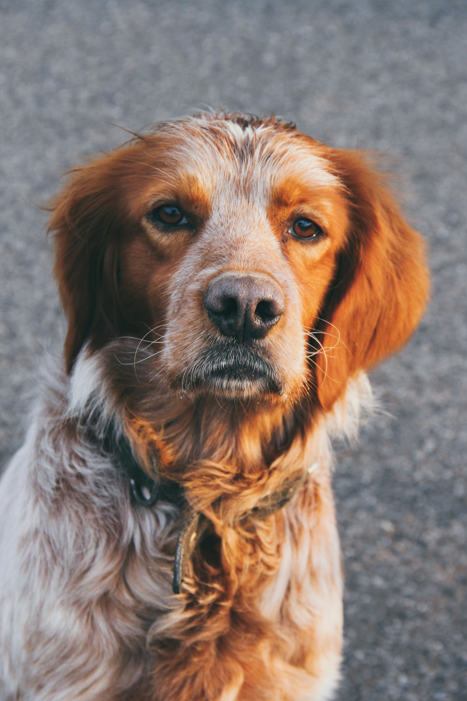

Oscar
Oscar is influential in our team. He understands what we do the best and provides the most work out of anyone here. He also loves the water.

Chafik Triplets
The guys do all of touch ups, catching anything Oscar misses or breaks. They also keep a lively atmosphere.

Kieran
She provides most of the financial support and housing needs for our team. She also has a loud personality.

Irem
He's just here most of the time. We love him.